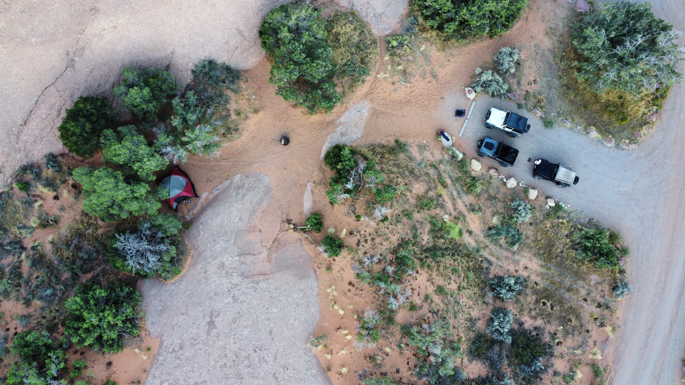
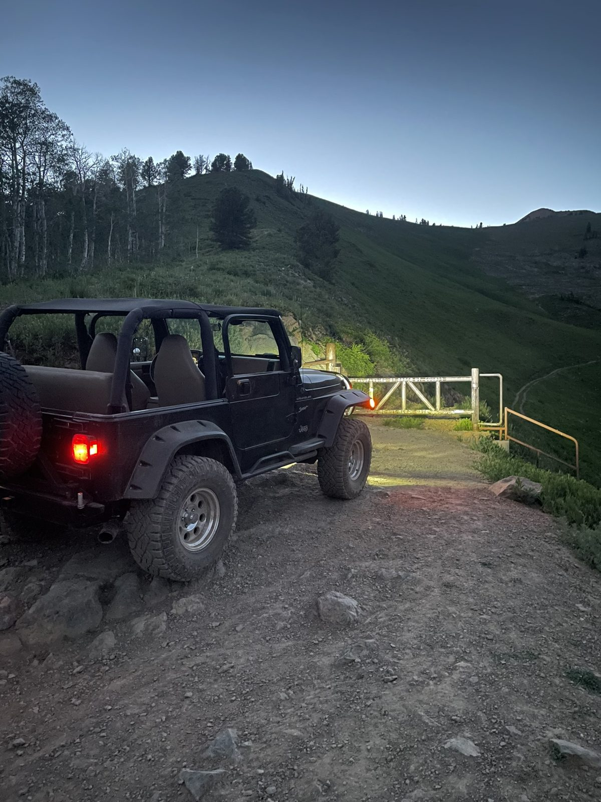
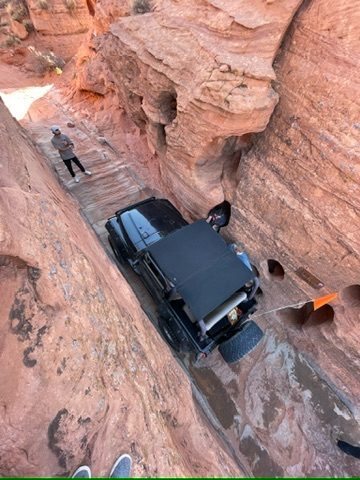

Ponderosa Trail Systems
Ponderosa Trail Systems

Built by someone who lives it.
Ponderosa Trail Systems started with a love of cars, a lot of time spent in Utah's backcountry, and a simple idea: your gear should never be the reason a trip falls short.
I'm Connelly Gale, founder of Ponderosa Trail Systems. I've loved cars for as long as I can remember — it's the kind of thing that started as a kid's fascination and never really let up. Growing up, that love of anything on wheels turned into countless trips exploring Utah's national parks and backcountry, along with the wild places in the states around it.
Spending that much time out on the trail teaches you what actually matters when you're far from pavement: gear that works, power that doesn't quit, and a rig that's set up to handle what's in front of it. Ponderosa Trail Systems grew directly out of that experience.
This is a passion-fueled company, plain and simple. The goal isn't just to sell parts — it's to help more people get out and genuinely enjoy the incredible land that Utah has to offer, with electrical systems built to keep up with wherever that takes you.


What drives Ponderosa
Built from real experience
Every system starts from actual time spent in Utah's canyons, mountains, and desert trails — not just a spec sheet.
Helping more people get outside
The goal is bigger than selling parts — it's making it easier for more people to responsibly enjoy Utah's public lands.
Built to be trusted
When you're hours from cell service, your power system needs to just work — no exceptions.